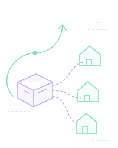

Dalla centrale a casa una connessione può attraversare fibra ottica, rame o entrambi. Segui il percorso nel video 3D e impara a riconoscere il tipo di accesso dal cavo che arriva all’abitazione.

🧠
Nozioni di base. Rame e fibra sono mezzi fisici diversi. La velocità della linea d’accesso e quella del Wi-Fi domestico dipendono da tratti diversi del collegamento. Download è la ricezione, upload è l’invio.
In questa lezione
▶️
Tre percorsi verso casa. Confronterai ADSL, FTTC e FTTH seguendo il cavo dalla centrale. Nel video 3D individuerai l’armadio in cui, in FTTC, la fibra lascia posto al doppino di rame.
🔬
Riconoscere un impianto. Vedrai come distanza e disturbi fra coppie di rame influiscono sulla linea. Nella missione classificherai gli impianti e sceglierai una prova per capire dove si trova un rallentamento.
🧮
Un ramo ottico condiviso. Riconoscerai gli apparati della rete ottica passiva e calcolerai la quota teorica per abitazione in un esempio di divisione in parti uguali.
1. Tre indirizzi, tre percorsi
Per riconoscere l’accesso, segui il mezzo fra l’operatore e l’abitazione.
La fibra è indicata in verde. Il doppino è indicato in arancione.
Con ADSL da centrale il tratto d’accesso usa il doppino fino al modem. Con FTTC (fibra fino all’armadio), un apparato attivo nell’armadio riceve il segnale dalla fibra e lo invia sul doppino attraverso VDSL2. Con FTTH (fibra fino a casa) la fibra raggiunge la presa ottica. Il terminale ottico può essere integrato nel router o collegato ad esso via Ethernet.
La presenza del Wi-Fi o di un cavo Ethernet in casa è compatibile con tutte e tre le soluzioni. Osserva dove termina la fibra rispetto alla presa d’utente.
2. Dalla centrale a casa
Individua dove la fibra lascia posto al doppino e segui il tragitto FTTH nella panoramica finale.
Voce generata con intelligenza artificiale.
Leggi la spiegazione del video
Dalla centrale dell’operatore parte la fibra ottica, indicata in azzurro. La telecamera segue il collegamento verso il quartiere su un percorso schematico.
In FTTC un apparato nell’armadio stradale riceve i dati dalla fibra e li ritrasmette come segnali elettrici. La linea arancione indica il doppino di rame che raggiunge il modem VDSL2 a casa.
La panoramica finale confronta l’FTTC con l’FTTH, dove la fibra raggiunge la presa ottica dell’abitazione.
3. Perché sul rame la distanza conta
Lo stesso doppino può comportarsi diversamente lungo due percorsi.
Distanza maggiorepiù attenuazione a parità di condizioni
Doppini vicinipossibile diafonia
Vectoringriduce parte della diafonia
xDSL indica una famiglia di tecnologie che trasportano dati sul doppino telefonico. ADSL è asimmetrica: la capacità in download è superiore a quella in upload. Nella prima generazione su linea analogica le frequenze per i dati arrivano a circa 1,1 MHz. La voce tradizionale può usare la banda più bassa. VDSL2 può usare una banda più ampia, soprattutto quando il tratto di rame è breve.
Il segnale si attenua lungo il cavo. La diafonia è il disturbo prodotto da segnali che viaggiano su coppie vicine. Dove è attivo, il vectoring coordina linee VDSL2 compatibili per ridurla. Distanza, qualità del cavo e interferenze influiscono sul collegamento. Dai soli metri non puoi ricavare con precisione la velocità reale.
4. Una fibra a monte, più abitazioni
Una rete ottica passiva distribuisce il segnale lungo più rami.
Il tratto a monte dello splitter è condiviso.
L’OLT è l’apparato attivo presso l’operatore. Lo splitter suddivide otticamente il segnale fra le fibre dirette alle abitazioni senza alimentazione elettrica. L’ONT, il terminale ottico dell’utente, è alimentato e presenta un’interfaccia per la rete domestica.
Un profilo GPON comune usa circa 2,5 Gbit/s in download e 1,25 Gbit/s in upload. XGS-PON usa circa 10 Gbit/s in entrambe le direzioni. Sono capacità nominali del ramo condiviso. La velocità a casa dipende anche dal traffico, dal profilo commerciale e dagli apparati.
5. Leggi un impianto dall’ingresso
Prendi una decisione a partire dagli apparati e dal cavo.
Casa Alba. Arriva un doppino dall’armadio, dove termina la fibra. Il modem aggancia VDSL2. L’accesso è FTTC.
Casa Brina. Arriva una fibra a una presa ottica. L’ONT è collegato via Ethernet al router. L’accesso è FTTH. Se un solo portatile è lento tramite Wi-Fi, confronta una misura via cavo prima di attribuire il problema alla rete d’accesso.
Casa Cedro. Il doppino parte dalla centrale e termina sul modem ADSL. Un armadio passivo di percorso, se presente, non rende l’accesso FTTC.
6. Quanto spetta a ciascuno?
Usa un modello ideale per distinguere capacità condivisa e velocità individuale.
8 utenti → 300 Mbit/s ciascuno
16 utenti → 150 Mbit/s ciascuno
Supponi che 8 utenti scarichino allo stesso tempo su un ramo da 2.400 Mbit/s utili e che la capacità sia divisa in parti uguali. La quota teorica è 2.400 ÷ 8 = 300 Mbit/s per utente. Con 16 utenti il modello dà 150 Mbit/s.
Il calcolo è valido con domanda uguale, uso simultaneo e divisione uniforme. Una PON reale assegna capacità in base al traffico e alla configurazione. Il risultato è una stima del modello scolastico.
7. Identifica l’impianto
Una fibra raggiunge la presa ottica. Fra ONT e router c’è un cavo Ethernet. Come classifichi l’accesso?
FTTH. L’Ethernet è a valle del terminale ottico, dentro l’abitazione.
Collegare due sedi in fibra
Per scegliere fibra e apparati verifica sia le perdite ottiche sia la velocità richiesta.
Per un collegamento di 6 km su tre tratte, ipotizza fibra monomodale, 0,35 dB/km, due giunti da 0,15 dB e due connessioni da 0,5 dB. Conta ogni collegamento intermedio secondo lo schema reale e usa valori compatibili con la lunghezza d’onda dei moduli.
Il trasmettitore garantisce almeno −6 dBm e il ricevitore richiede almeno −18 dBm. La rete richiede 0,8 Gbit/s utili. Per l’esempio, le schede dei moduli compatibili dichiarano 10 km di portata e il sistema garantisce 0,9 Gbit/s utili.
Confronta perdite e velocità
Budget disponibile: −6 − (−18) = 12 dB. Perdita stimata: 6 × 0,35 + 2 × 0,15 + 2 × 0,5 = 3,4 dB. Restano 8,6 dB da confrontare con il margine richiesto. I 0,9 Gbit/s utili soddisfano la richiesta. Per apparati reali controlla anche portata alla velocità scelta, tipo di fibra e potenza massima ammessa in ricezione.
8. Checkpoint
Cinque decisioni. Leggi il riscontro dopo ogni risposta e riprova quando vuoi.
Per riconoscere l’accesso a Internet, segui la linea dell’operatore dalla centrale fino all’abitazione. In alcuni impianti il mezzo cambia nell’armadio in strada.
Il punto in cui finisce la fibra permette di distinguere un accesso FTTC da uno FTTH.
Centrale · partenza
Armadio · possibile cambio di mezzo
Abitazione · punto terminale
Video
Dalla centrale a casa
Nel video l’azzurro rappresenta la fibra e l’arancione il doppino di rame, formato da due fili intrecciati.
Consegna. Per ogni percorso indica dove finisce la fibra e quale mezzo entra in casa. Usa lo schema successivo per controllare.
Tre accessi sullo stesso schema
Nell’ADSL il doppino arriva dalla centrale. Nella FTTC la fibra arriva all’armadio in strada e l’ultimo tratto è in rame.
Nella FTTH la fibra arriva fino all’abitazione. Lo schema mostra il punto in cui cambia il mezzo nei tre casi.
Sul doppino
Sul doppino il segnale si indebolisce lungo il percorso. Questo effetto si chiama attenuazione. Le coppie vicine nello stesso cavo possono anche disturbarsi a vicenda.
Questo disturbo si chiama diafonia. Il vectoring coordina le linee compatibili per ridurre il disturbo reciproco.
Attenuazione · il segnale si indebolisce
Diafonia · interferenza tra coppie
Vectoring · coordina linee compatibili
La rete ottica passiva
In una rete ottica passiva, PON, l’apparato dell’operatore è l’OLT. Lo splitter divide il segnale luminoso fra più fibre senza alimentazione propria.
A casa l’ONT termina il collegamento ottico e, nell’esempio, lo collega al router tramite Ethernet.
La capacità del ramo
Leggi le coppie di valori come download verso casa / upload verso l’operatore. Il GPON dell’esempio ha velocità nominali diverse nelle due direzioni.
XGS-PON ha circa 10 Gbit/s in entrambe le direzioni. Sono capacità nominali del ramo condiviso fra le abitazioni collegate.
GPON comune · circa 2,5 / 1,25 Gbit/s
XGS-PON · circa 10 / 10 Gbit/s
Capacità condivisa fra le utenze del ramo
Esercizio
La quota di ciascun utente
In un modello semplificato, 2.400 Mbit/s utili in download si dividono in parti uguali fra gli utenti attivi.
Consegna. Calcola la quota con 8 utenti e poi con 16. Spiega come cambia quando raddoppiano gli utenti.
Soluzione guidata
Con 8 utenti fai 2.400 ÷ 8 = 300 Mbit/s a testa. Con 16 fai 2.400 ÷ 16 = 150 Mbit/s. Nel modello, raddoppiare gli utenti dimezza la quota.
Curiosità
La fibra durante un blackout
La fibra è intatta ma in casa manca la corrente. Quali apparati controllate?
Controlliamo ONT e router: in casa entrambi hanno bisogno di corrente. Lo splitter distribuisce la luce senza alimentazione. Una batteria può tenere accesi gli apparati di casa per un tempo limitato.
Collegare due sedi in fibra
6 km × 0,35 dB/km. Due giunti da 0,15 dB. Due connessioni da 0,5 dB. Budget ottico di 12 dB.
Quanta riserva rimane?
Perdita 3,4 dB. Riserva 8,6 dB. Verifica a parte portata degli apparati e velocità utile.
Sfida alla classe
La fibra dell’operatore arriva alla presa ottica dentro casa. La presa è collegata all’ONT e da lì un cavo Ethernet raggiunge il router.
Quale accesso è fra ADSL, FTTC e FTTH? Dove termina la fibra e quale tratto percorre il cavo Ethernet?
Soluzione guidata
L’accesso è FTTH perché la fibra dell’operatore arriva alla presa ottica dentro casa. L’ONT termina il collegamento ottico. Ethernet collega l’ONT al router sul tratto interno.
Da ricordare
Dove finisce la fibraNella FTTC finisce all’armadio e il doppino arriva a casa. Nella FTTH arriva all’abitazione.
Che cosa succede sul rameLa distanza indebolisce il segnale. La diafonia è il disturbo fra coppie vicine.
Come funziona una PONLo splitter distribuisce la luce. Gli utenti sullo stesso ramo condividono la capacità.